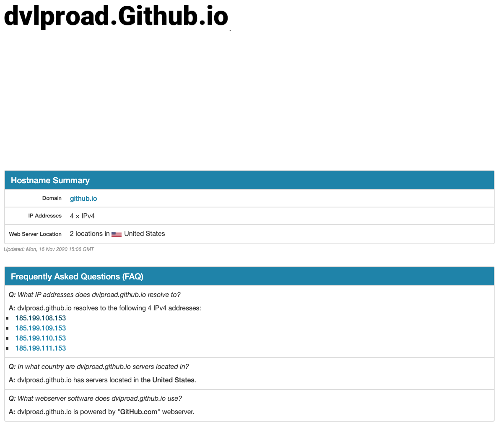
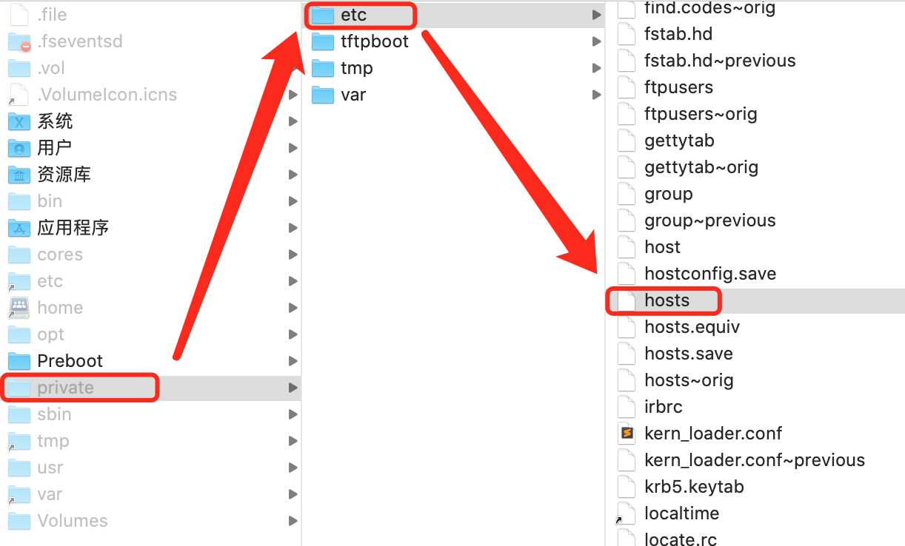

title: 科学上学常识
date: 2019-06-19 18:02:45
categories:
[TOC]
上网查找后看到有两种说法：
（参考：https://tieba.baidu.com/p/6865126778）
通过 https://www.ipaddress.com/ 链接查找到github.io的IP地址，一般是四个地址任选一个；

找到/etc/hosts文件，Windows一般在/Windows/System32/drivers/etc目录下，MAC在/private/etc目录下，添加一行。

例如：要访问：https://dvlproad.github.io/
则在hosts添加：
185.199.108.153 dvlproad.github.io